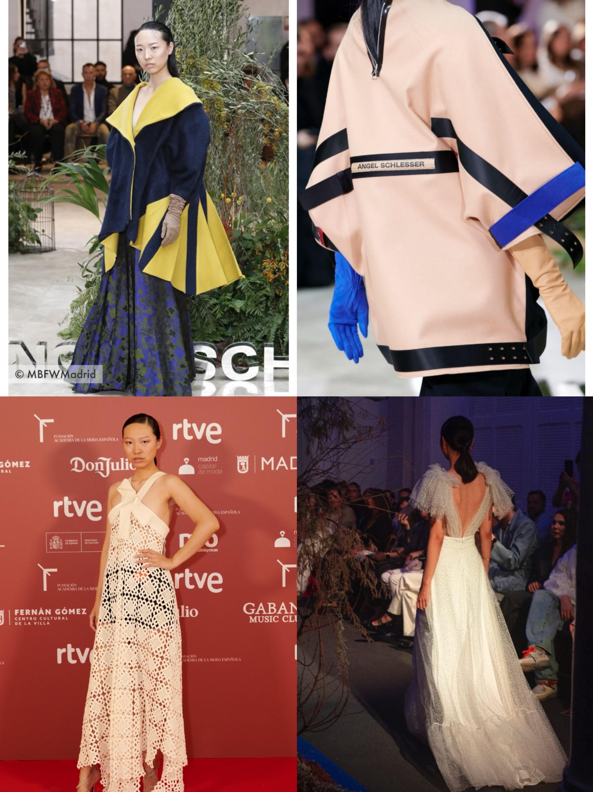
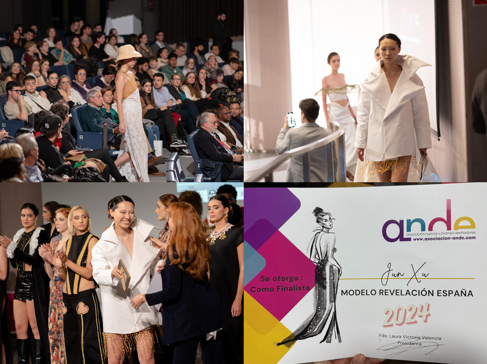
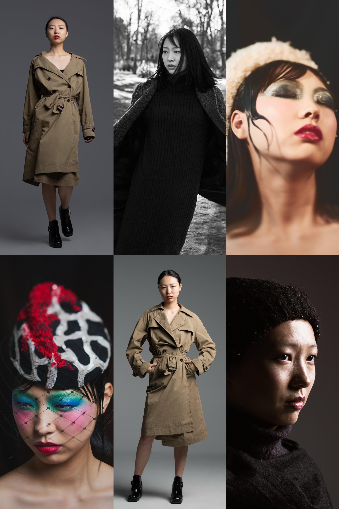

Mi Experiencia en el Modelaje: Un Viaje de Autodescubrimiento y Confianza
Soy modelo de la Agencia Isabel Navarro
A lo largo de los años, el modelaje ha sido una de las experiencias más enriquecedoras en mi vida. Aunque muchos lo ven solo como una forma de mostrar ropa o posar frente a una cámara, para mí el modelaje ha sido mucho más que eso: ha sido un camino de autodescubrimiento, crecimiento personal y, sobre todo, una herramienta poderosa para mejorar mi autoestima.
Un Primer Paso Hacia la Confianza
Al principio, el modelaje fue un reto, un campo completamente nuevo que me empujó fuera de mi zona de confort. A medida que comencé a trabajar en diferentes sesiones fotográficas, desfiles y campañas, empecé a darme cuenta de algo importante: no se trataba solo de la apariencia física, sino también de cómo me sentía conmigo misma. Cada vez que subía al escenario o posaba frente a la cámara, aprendí a confiar más en mi cuerpo, a valorarme tal como soy y a sentirme poderosa. El modelaje me enseñó que la verdadera belleza proviene de la confianza en uno mismo, más que de cualquier estándar impuesto por los demás.
El Impacto en Mi Autoestima
Uno de los aspectos más sorprendentes del modelaje ha sido el impacto directo que ha tenido en mi autoestima. Al aprender a trabajar frente a la cámara y recibir comentarios positivos de fotógrafos, diseñadores y colegas, comencé a reconocer mi propio valor y potencial. El modelaje me ha permitido ver mi cuerpo y mis rasgos desde una perspectiva diferente, aprendiendo a amar y cuidar lo que tengo. Me ha enseñado a abrazar mis imperfecciones y a entender que cada persona tiene una belleza única que merece ser celebrada.
La Importancia de la Autenticidad
El modelaje también me ha enseñado la importancia de ser auténtica. En un mundo que a menudo promueve imágenes idealizadas, el modelaje me ha permitido encontrar y mostrar mi verdadero ser. Cada sesión fotográfica y cada desfile son oportunidades para expresar mi personalidad y estilo, no solo como modelo, sino como una persona auténtica que tiene algo único que ofrecer.
Un Viaje de Crecimiento Continuo
Hoy en día, el modelaje sigue siendo una parte importante de mi vida. Me ha permitido crecer no solo profesionalmente, sino también como persona. A lo largo de esta experiencia, he aprendido a valorarme más, a ser más consciente de mis fortalezas y a enfrentar mis inseguridades con valentía. El modelaje no solo ha sido una carrera o un trabajo; ha sido una experiencia transformadora que ha impactado positivamente en mi bienestar emocional y psicológico.
El modelaje me ha enseñado que la verdadera belleza no reside en los estándares exteriores, sino en cómo nos sentimos con nosotros mismos. Es una constante celebración de la individualidad y la confianza, y por eso estoy agradecida por cada paso que he dado en este viaje.
"La confianza en ti mismo es el primer paso hacia el éxito." — Ralph Waldo Emerson